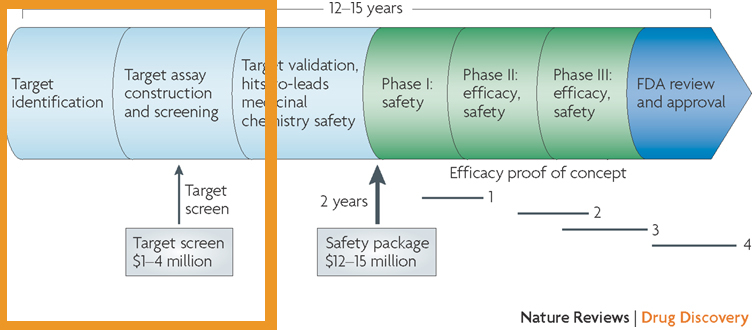
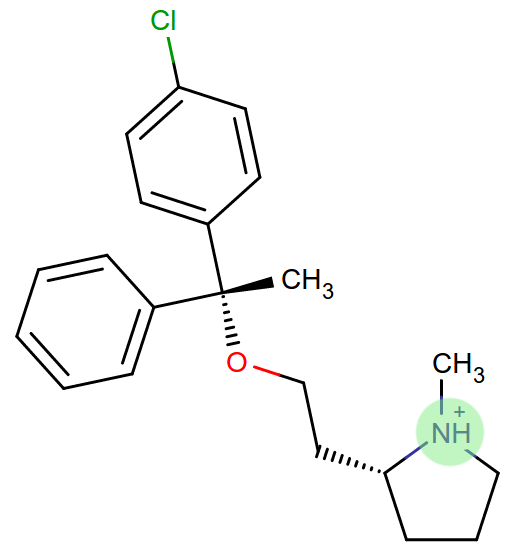
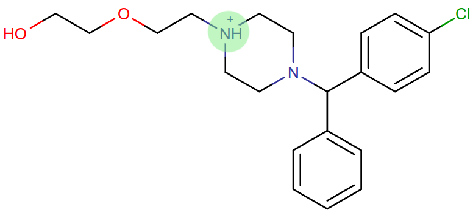
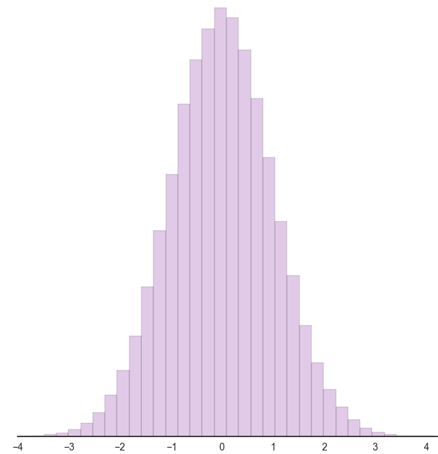

Admission to candidacy exam
Bas Rustenburg
Date : 5/29

The efficiency of the pharmaceutical industry has been declining for years
Eroom's law
 Kack W. Scannell et al. Nature Reviews Drug Discovery 11, 191-200 (March 2012)
Kack W. Scannell et al. Nature Reviews Drug Discovery 11, 191-200 (March 2012)It takes up to 4 million dollars, just to find a molecule that binds a target!
Allen D. Roses Nature Reviews Drug Discovery 7, 807-817 (October 2008)Each consecutive step only gets more expensive!
There is a clear need for a cheaper strategy
Computational approaches offer a cheap solution
- They benefit from Moore's law, with increased computational efficiency each year
- Drugs that do not bind the intended target can fail earlier, without a huge R&D investment
- Allows for a fail fast, fail cheaply methodology for designing drugs
For instance, * compounds that have not been synthesized. * when protein is expensive. * When you cant reach concentrations of poorly soluble drugs.
It is all about the binding affinity

It is all about the binding affinity
|
Docking does not provide accurate estimates
 For prediction of compound affinity, none of the docking programs or scoring functions made
a useful prediction of ligand binding affinity.
For prediction of compound affinity, none of the docking programs or scoring functions made
a useful prediction of ligand binding affinity.Warren et al. J. Med. Chem., 2006, 49 (20), pp 5912–5931
If your name is DE Shaw
You can simulate binding events from microsecond timescale MD simulations

For typical drug off-rates (1/10 000 seconds), trajectories would need to be impractically long (hours), requiring ~100 million CPU-years to simulate.
Alchemical free energy calculations
Why?
They allow efficient sampling of the relevant states of protein-ligand complexes.
www.alchemistry.org
Alchemical free energy calculations
(in principle) allow for us to calculate affinities directly.

Alchemical free energy calculations
There are deficiencies that need to be addressed before alchemical free energy calculations can be applied widely.
Alchemical free energy calculations
There are deficiencies that need to be addressed before alchemical free energy calculations can be applied widely.

Alchemical free energy calculations
There are deficiencies that need to be addressed before alchemical free energy calculations can be applied widely.

Charged ligands include
 Saquinavir Saquinavir |  Nelfinavir Nelfinavir |
 Indinavir Indinavir |
Protease inhibitors typically have positive charges. Here are three FDA approved HIV-protease inhibitors.
(image source: www.chemicalize.org)
Charged ligands include
 Aspirin Aspirin |  Ibuprofen |
Many over-the-counter nonsteroidal anti-inflammatory drugs have charged moieties!
(image source: www.chemicalize.org)
Charged ligands include
Anti-histamines
 Histamine Histamine |
(image source: www.chemicalize.org)
Charged ligands include
Anti-histamines
 Benadryl (diphenhydramine) Benadryl (diphenhydramine) | Tavist (clemastine) |
 Astelin (azelastine) Astelin (azelastine) | Atarax (hydroxyzine) |
(image source: www.chemicalize.org)
Alchemical free energy calculations
There are deficiencies that need to be addressed before alchemical free energy calculations can be applied widely.

Protonation states may vary for kinase inhibitors
EGFR inhibitors lapatinib and gefitinib
 Lapatinib Lapatinib |  Gefitinib Gefitinib |
Many FDA approved kinase inhibitors have titratable moieties with pKas near 7.
(image source: www.chemicalize.org)
These two drugs are EGFR/Her2 inhibitors, important in lung and breast cancers (Non small cell lung cancer)
Protonation states may vary for kinase inhibitors
Imatinib, a potent inhibitor of Abl kinase

Szakács, Z. et al. J Med Chem 2005, 48, 249–255
Do not forget to mention that the protonated form of these inhibitors is charged
Alchemical free energy calculations
There are deficiencies that need to be addressed before alchemical free energy calculations can be applied widely.

Binding of multiple ligands to a single target
 A summary of human serum albumin (HSA) crystal structures bound to small molecules.
A summary of human serum albumin (HSA) crystal structures bound to small molecules.Ghuman, J et al. J Mol Biol 2005, 353, 38–52
Binding of multiple ligands to a single target
 A summary of human serum albumin (HSA) crystal structures bound to small molecules.
A summary of human serum albumin (HSA) crystal structures bound to small molecules.Ghuman, J et al. J Mol Biol 2005, 353, 38–52
Binding of multiple ligands to a single target
Human serum albumin
 A summary of human serum albumin (HSA) crystal structures bound to small molecules.
A summary of human serum albumin (HSA) crystal structures bound to small molecules.Ghuman, J et al. J Mol Biol 2005, 353, 38–52
Binding of multiple ligands to a single target
Fragment based drug discovery
At high concentrations, multiple fragments can bind to a protein
The binding of 3 fragments to p38a kinase.
 PDB: 4EHV PDB: 4EHV |  PDB: 0SJ PDB: 0SJ |
Over B et al. Nat Chem 2013 Jan;5(1):21-8
Establish a correct quantitative treatment of alchemical free energy calculations for binding of charged ligands
Aim 1.
Experiment versus computation
- We will use alchemical free energy calculations to predict binding free energies, while we compare various approaches to each other
- At the same time, we will perform isothermal titration calorimetry (ITC) experiments that can validate the different corrections.
The host-guest model system
Aim 1
We will use cucurbit-[7]-uril as a model system
 |  | The system is useful because:
|
 | ||
Basic slide on ITC
Current ITC analysis protocols do not propagate errors of the experimental procedure
 Myszka DG et al. J Biomol Tech 2003 Dec; 14(4):247-69
Myszka DG et al. J Biomol Tech 2003 Dec; 14(4):247-69Observed errors can directly be correlated to errors in concentration
The extinction coefficient

- From the lambert beer law:
 where A is absorbance, c is concentration and l is the pathlength
where A is absorbance, c is concentration and l is the pathlength
Establish a correct quantitative treatment of alchemical free energy calculations for binding of charged ligands
Aim 1.
 | In order to apply alchemical free energy calculations to charged ligands, one needs to eliminate artifacts introduced into the calculation arising from the modeling of bulk solvent behavior using a small periodic system. Ligand interactions with:
|
Image Source: [1] |
MM Reif and C Oostenbrink. J Comput Chem 35.3 (Nov. 2013), pp. 227–243
Establish a correct quantitative treatment of alchemical free energy calculations for binding of charged ligands
Aim 1.
| Bulk liquids are approximated in simulation, either by using periodic boundary conditions, or an implicit solvent. Often, to further reduce computation cost, we introduce truncated,potentials and non-Coulombic electrostatics (such as particle mesh Ewald,[PME],and reaction field [RF] potentials). |
Image Source: [2] |
MM Reif and C Oostenbrink. J Comput Chem 35.3 (Nov. 2013), pp. 227–243
Establish a correct quantitative treatment of alchemical free energy calculations for binding of charged ligands
Aim 1.
- A number of corrections have been proposed but:
- They have not been compared to each other
- Quantitative correctness of these methods has not been established
- Sources:
- MM Reif and C Oostenbrink. J Comput Chem 35.3 (Nov. 2013), pp. 227–243
- GJ Rocklin et al. J Chem Phys 139.18 (2013), p. 184103.
- YL Lin et al. J Chem Theory Comput 10.7 (July 2014), pp. 2690–2709.
Establish a correct quantitative treatment of alchemical free energy calculations for binding of charged ligands
Aim 1.
Subaim 1.1: Develop an accurate approach to quantifying experimental uncertainty in ITC using Bayesian inference.
Because we need a reliable experimental dataset in order to make a quantitative comparison
Subaim 1.2: Perform a quantitative comparison of suggested correction models to experiments to establish a correct treatment of charged ligands in alchemical free energy calculations.
Evaluating the charge corrections, testing an alternative (counter ions), comparing to each other and experiment
Develop an accurate approach to quantifying experimental uncertainty in ITC using Bayesian inference.
Subaim 1.1
The experimental parameters, , can be estimated using Bayes rule:
 , where
, where
- is the posterior distribution. The probability of the parameters given the observed data. This is what we want to know!
is the likelihood. The probability of the observed data, given a single set of parameters.
- are distributions containing prior information. We can use this to propagate errors.
We can sample from the posterior distribution by using a technique called Markov chain Monte Carlo.
Sampling from a posterior distribution using MCMC
Flipping an weighted coin
 http://bayesianbiologist.com
http://bayesianbiologist.comDevelop an accurate approach to quantifying experimental uncertainty in ITC using Bayesian inference.
Subaim 1.1
The ITC model structure

Thermodynamic parameters include
- binding affinity,
- enthalpy of binding,
- mechanical heats offset,
- concentration of syringe component,
- concentration of cell component,
- noise parameter,
We can use prior distributions to propagate error estimates in concentrations, and include previous measurements.
Develop an accurate approach to quantifying experimental uncertainty in ITC using Bayesian inference.
Subaim 1.1
The ITC model structure
The likelihood model,  |  |
Where the observed heats are sampled from a normal distribution | |
 , with a variance of .
, with a variance of .What will our experimental results look like?
 |  |
Compare the different charge correction models
Subaim 1.2
We will consider these approaches:
- Reif and Oostenbrink use thermodynamic cycles to eliminate individual components
- Rocklin et al. use Poisson-Boltzmann calculations with exact either numerical solutions to quantify the erroneous contributions.
- Lin et al. use potential of mean force (PMF) calculations in a large simulation system, pulling the ligand away from the protein non-alchemically.
- Eliminating a pair of ions, with a net charge of 0.
We will first check if the methods produce the same quantitative estimate. Next, we will compare to experiment, to see if they produce a quantitatively correct answer.
This is the first comparison of any of these methods on the same system!
(Backup) Slides on individual corrections
class VPITC(Instrument): """ The MicroCal VP-ITC. Volumes from brochure used. http://www.malvern.com/Assets/MRK2058.pdf If possible, we recommend using the calibrated volume for the .itc file. """ def __init__(self): super(VPITC, self).__init__(V0=1.400 * ureg.milliliter, V_correction=0.044 * ureg.milliliter, itcfile=None, description="MicroCal VP-iTC")
Quantify the magnitude of protonation state effects on binding
Aim 2.

Quantify the magnitude of protonation state effects on binding
Aim 2.
Proteins and many small-molecule drugs contain titratable moieties that can change protonation state upon binding or sample mixtures of protonation states, often in a conformation-dependent manner.
 The pH dependent effect in lin-benzoguanines binding to tRNA−guanine transglycosylase [3]
The pH dependent effect in lin-benzoguanines binding to tRNA−guanine transglycosylase [3]Chasing Protons: .... , Neeb et al. J. Med. Chem., 2014, 57 (13), pp 5554–5565
Protonation states are relevant to kinase inhibitors
- Kinases are hugely important targetsfor anti cancer drugs.
- Evidence exists that for the binding of imatinib to Abl kinase, pH dependent effects may contribute to the binding affinity, and preliminary data indicates that it is the same for many other kinase inhibitors.
 | |
Quantify the magnitude of protonation state effects on binding
Aim 2.
Subaim 2.1: Benchmark small molecule pKa prediction tools against experimental data for kinase inhibitors.
We need reliable pKa estimates of small molecule kinase inhibitors. We will benchmark available tools and compare to experimental data.
Subaim 2.2: Survey the kinase:inhibitor cocrystal structures for possible protonation state effects in inhibitor binding.
We will identify kinase-inhibitor systems that show changes in the populations of protonation states from MCCE calculations.
Subaim 2.3: Dissect the determinants and impact of protonation state effects on binding affinity through free energy calculations and ITC experiments.
The systems identified will be simulated using alchemical free energy calculations, and we will perform ITC experiments on them.
Benchmark small molecule pKa prediction tools against experimental data for kinase inhibitors.
Subaim 2.1
Experimental data
** Add image T3 data & instrument **
For the sake of having a completely computational framework to perform these calculations, we would like to find a reliable predictor.
We will benchmark small molecule pKa prediction tools against this data.
- MoKa generates pKa s based on atomistic descriptors, defined by the surrounding atoms. The descriptors are based on molecular interaction fields calculated using GRID for a library of 3D fragments, but can successfully be applied on 2D structures.
- Schrodinger’s Jaguar provides means of estimating pKa values using quantum mechanical methods.
- Epik uses Hammett Taft linear free energy approaches [86] for predicting pKa values.
Identify kinase systems where protonation state changes could be important.
Survey the kinase:inhibitor cocrystal structures for possible protonation state effects in inhibitor binding.
Subaim 2.2
We will investigate complex structures from the protein databank, using a framework called MCCE.
Survey the kinase:inhibitor cocrystal structures for possible protonation state effects in inhibitor binding.
MCCE samples multiple conformations of protein side-chains and estimates the most probably protonation state. The framework has been extended to incorporate sampling of ligands. We will keep ligand conformations fixed to those found in crystal structures.
Subaim 2.2

Dissect the determinants and impact of protonation state effects on binding affinity through free energy calculations and ITC experiments.
Subaim 2.3
We will perform alchemical free energy calculations using a dynamic protonation state scheme also known as constant-pH simulations.
These calculations will use the pKa predictions provided by our pKa tool of choice.
Or our experimental estimates, if the pKa tools dont perform well enough.
We will quantify
- The total free energy of binding and,
- The contribution of protonation state changes to the total.
- Perform complementary ITC experiments to validate the free energy calculations
Constant-pH alchemical free energy calculations
Calculating free energy of protonation contribution
ITC experiments to disseminate protonation state effects from binding
Using buffers with different ionization enthalpy
In order to detect protonation state effects in ITC, we can perform multiple experiments that have different ionization enthalpies. This will lead to different magnitude contributions to the binding affinity, which will allow us to detect and quantify net protonation state effects.
Alternatives
Develop a framework for alchemical free energy calculations to describe weak association and cooperative ligand binding.
Aim 3.
Weak binding and association of multiple ligands to proteins are ubiquitous interactions in biological and pharmaceutically relevant systems.
It is particularly common when using drug discovery approaches such as fragment-based ligand design, where concentrations are scaled up to detect weak binding signals, often resulting in multiple associating fragments.
Most available free energy calculation frameworks focus on 1:1 binding interactions, and are not suited for calculating free energies of an arbitrary number of ligands.
We will overcome deficiencies in current frameworks with a new framework that can provide predictions for ligands binding multiple times to a single macromolecule.
Develop a framework for alchemical free energy calculations to describe weak association and cooperative ligand binding.
Aim 3.
Subaim 3.1: Extend alchemical free energy calculations to simulate multiple ligand binding.
Current frameworks are focussed on single ligand (1:1) association to proteins
Subaim 3.2: Validate computational predictions by applying Bayesian model selection on ITC experiments of HSA and a series of NSAIDs.
We will expand the Bayesian ITC framework (Aim 1) to incorporate multiple ligand binding.
An alchemical ladder between stoichiometric states